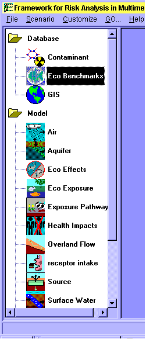

|
 |
 |
 |
FUI Appendix A
FRAMES UI Icon Key
The figure below is a screen capture of the left side of the FUI window as it appears on your computer screen. A toolbar of module icons is to the left side. To the right of the toolbar is the workspace area, where actual site design takes place. The file name and path are listed below the working space window in the left corner.
ICON DESCRIPTION

| NAME | ICON | DESCRIPTION |
| Air | This icon is used to select an air model. Typically, this module takes in Air Flux File (AFF), Global Input Data (GID), and produces Atmospheric Transport Output file (ATO). | |
| Aquifer | This icon is used to select a saturated zone model. Typically, this module takes in Water Flux File (WFF), Global Input Data file (GID), and produces Water Concentration File (WCF), Water Flux File (WFF). | |
| Constituent | This icon is used to select a constituent database model. | |
| Eco Aquatic Benchmarks |  |
This icon is used to select an ecological aquatic benchmark database. |
| Eco Effects | This icon is used to select the ecological effects models. | |
| Eco Exposure | This icon is used to select ecological exposure models. | |
| Exposure Pathways | This icon is used to select an exposure pathway model. Typically, this module takes in Source Concentration file (SCF), Water Concentration file (WCF), Atmospheric Transport Output file (ATO), Global Input Data file (GID), and produces Exposure Pathway file (EPF). | |
| Health Impacts | This icon is used to select a health impacts model. Typically, this module takes in Intake Pathway File Format File, Global Input Data file (GID), and produces Health Impacts File Format. | |
| Overland Flow | This icon is used to select an overland flow model. Typically, this module takes in Water Flux File (WFF), Global Input Data file (GID), and produces Source Concentration File (SCF), Water Flux File (WFF). | |
| Receptor Intake | This icon is used to select a receptor intake model. Typically, this module takes in Exposure Pathway File Format, Global Input Data file (GID), and produces Intake Pathway File Format. | |
| Sensitivity | This icon is used to select a sensitivity/uncertainty model. | |
| Source | This icon is used to select a source term model. Typically, this module takes in Global Input Data file (GID), and produces Source Concentration File (SCF), Air Flux File (AFF), Water Flux File (WFF). | |
| Surface Water | This icon is used to select a surface water model. Typically, this module takes in Water Flux File (WFF), Global Input Data file (GID), and produces Water Flux Files (WFF) | |
| Vadose Zone | This icon is used to select a vadose zone model. Typically, this module takes in Water Flux File (WFF), Global Input Data file (GID), and produces Water Flux File (WFF). |
Webmaster: Melany Eslinger
Date Reviewed: July 14, 2002